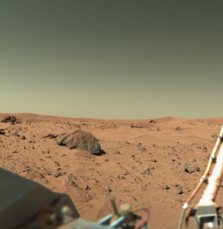

Марс
 Марс е четвъртата планета от
Слънчевата система. Тя
носи името на римския бог на войната, чийто щит и копие образуват символа на планетата (♂). Причината е
особеният ѝ цвят, заради който
е наричана още „червената планета“. Марс има два естествени спътника: Фобос и Деймос (в превод от гръцки:
„страх“ и „ужас“). Те са малки и имат неправилна форма. Вероятно са бивши астероиди, уловени от
гравитационното поле на планетата и останали
в орбита около нея. Марс е планета от земен тип с разредена атмосфера. Повърхността му напомня едновременно
за ударните кратери на Луната и за вулканите, пустините, долините и полярните шапки на Земята. На Марс се
намира най-високият планински
връх в Слънчевата система – Олимп. Периодът на завъртане и смяната на годишните времена на Марс много
наподобяват земните.
След първото прелитане край планетата, направено от „Маринър 4“ през 1965 г., възниква предположението, че
на повърхността на Марс има вода, а през септември 2015 НАСА обявява, че разполага с доказателства за това.
От всички планети от земен тип Марс е най-вероятното място, където може да се открие вода или дори живот.
Около планетата обикалят три космически апарата: „Марс Одисей“, „Марс експрес“ и „Марс риконисънс орбитър“.
Това е повече от всяка друга планета в Слънчевата система с изключение на Земята. Повърхността на планетата
приютява два марсохода от програмата „Марс експлорейшън ровър“ – „Спирит“ и „Опъртюнити“, както и по-новия
апарат „Кюриосити“. Данните, събрани от тези и предишни апарати, говорят, че на планетата някога е била
покрита с вода. Наблюденията показват, че повърхността е прорязана от малки потоци, подобни на гейзери.
Наблюдения, направени с апарата на НАСА „Марс глобъл сървейър“, дават доказателства, че южната полярна шапка
намалява.
Марс е четвъртата планета от
Слънчевата система. Тя
носи името на римския бог на войната, чийто щит и копие образуват символа на планетата (♂). Причината е
особеният ѝ цвят, заради който
е наричана още „червената планета“. Марс има два естествени спътника: Фобос и Деймос (в превод от гръцки:
„страх“ и „ужас“). Те са малки и имат неправилна форма. Вероятно са бивши астероиди, уловени от
гравитационното поле на планетата и останали
в орбита около нея. Марс е планета от земен тип с разредена атмосфера. Повърхността му напомня едновременно
за ударните кратери на Луната и за вулканите, пустините, долините и полярните шапки на Земята. На Марс се
намира най-високият планински
връх в Слънчевата система – Олимп. Периодът на завъртане и смяната на годишните времена на Марс много
наподобяват земните.
След първото прелитане край планетата, направено от „Маринър 4“ през 1965 г., възниква предположението, че
на повърхността на Марс има вода, а през септември 2015 НАСА обявява, че разполага с доказателства за това.
От всички планети от земен тип Марс е най-вероятното място, където може да се открие вода или дори живот.
Около планетата обикалят три космически апарата: „Марс Одисей“, „Марс експрес“ и „Марс риконисънс орбитър“.
Това е повече от всяка друга планета в Слънчевата система с изключение на Земята. Повърхността на планетата
приютява два марсохода от програмата „Марс експлорейшън ровър“ – „Спирит“ и „Опъртюнити“, както и по-новия
апарат „Кюриосити“. Данните, събрани от тези и предишни апарати, говорят, че на планетата някога е била
покрита с вода. Наблюденията показват, че повърхността е прорязана от малки потоци, подобни на гейзери.
Наблюдения, направени с апарата на НАСА „Марс глобъл сървейър“, дават доказателства, че южната полярна шапка
намалява.
Физически характеристики
Диаметърът на Марс е почти двойно по-малък от земния. Той е по-малко плътен от Земята, притежава едва 15% от нейния обем и само около 11% от нейната маса. Повърхността на Марс е почти толкова голяма, колкото общата площ на земните континенти, а масата му е 10 пъти по-малка от земната. Марс е по-голям и по-масивен от Меркурий, обаче Меркурий е по-плътен. В резултат на това двете планети имат почти еднакво гравитационно привличане на повърхността си – разликата е по-малко от 1% в полза на Марс. Червеникаво-кафявият цвят на планетата се дължи на наличието на железен(III) оксид, по-познат като хематит или ръжда. Той може да изглежда с карамелен или с друг подобен цвят: златист, оранжев, светлокафяв, зеленикав – в зависимост от състава на минералите по повърхността на планетата. Денонощието на Марс е с продължителност 24 часа, 39 минути и 35,244 секунди, което съвсем малко се различава от земното денонощие.
Атмосфера
 Атмосферата на Марс е изключително рядка: повърхностното ѝ налягане е едва 750 Pa (0,75%, тоест 133 пъти
по-малко от атмосферното налягане на Земята, измерено на морското равнище). Марсианската атмосфера се
състои от 95% въглероден диоксид, 3% азот, 1,6% аргон и следи от кислород и вода. През 2003 г. по време
на наблюдения от Земята е открит и метан. Откритието е потвърдено през март 2004 г. от апарата „Марс
експрес“.
Метанът е неустойчив газ. Разгражда се под действието на слънчевото лъчение и някои химически вещества.
Поради това наличието му сочи, че съществува или в недалечното минало е имало механизъм за неговото
отделяне, вероятно намиращ се на повърхността на планетата. Засега се смята, че газът е с вулканичен
произход или е попаднал на повърхността вследствие от сблъсъци с комети. Учените не изключват
възможността той да е продукт на жизнената дейност на метаногенни организми, но за това няма достатъчно
доказателства. Метанът е разпределен неравномерно в атмосферата под формата на облаци, което показва, че
бива сравнително бързо разграждан и отделян. Планират се допълнителни изследвания с цел доказване
произхода на метана чрез „съпътстващи газове“: етан – в случай на биологични дейности; или серен диоксид
– ако произходът е вулканичен.
За атмосферата на Марс е характерна циркулация на водните пари от единия полюс до другия в зависимост от
сезоните на планетата. Тя поражда типично земни атмосферни явления като скреж и переста облачност (вижте
тук за снимки на скреж, направени от марсохода „Опъртюнити“ през 2004 г.)
Атмосферата на Марс е изключително рядка: повърхностното ѝ налягане е едва 750 Pa (0,75%, тоест 133 пъти
по-малко от атмосферното налягане на Земята, измерено на морското равнище). Марсианската атмосфера се
състои от 95% въглероден диоксид, 3% азот, 1,6% аргон и следи от кислород и вода. През 2003 г. по време
на наблюдения от Земята е открит и метан. Откритието е потвърдено през март 2004 г. от апарата „Марс
експрес“.
Метанът е неустойчив газ. Разгражда се под действието на слънчевото лъчение и някои химически вещества.
Поради това наличието му сочи, че съществува или в недалечното минало е имало механизъм за неговото
отделяне, вероятно намиращ се на повърхността на планетата. Засега се смята, че газът е с вулканичен
произход или е попаднал на повърхността вследствие от сблъсъци с комети. Учените не изключват
възможността той да е продукт на жизнената дейност на метаногенни организми, но за това няма достатъчно
доказателства. Метанът е разпределен неравномерно в атмосферата под формата на облаци, което показва, че
бива сравнително бързо разграждан и отделян. Планират се допълнителни изследвания с цел доказване
произхода на метана чрез „съпътстващи газове“: етан – в случай на биологични дейности; или серен диоксид
– ако произходът е вулканичен.
За атмосферата на Марс е характерна циркулация на водните пари от единия полюс до другия в зависимост от
сезоните на планетата. Тя поражда типично земни атмосферни явления като скреж и переста облачност (вижте
тук за снимки на скреж, направени от марсохода „Опъртюнити“ през 2004 г.)
Геология
 Наблюдения на магнитното поле на Марс, извършени от апарата Марс глобъл сървейър, сочат, че част от
кората на планетата е магнетизирана на ивици с променлива полярност, широки около 150 km и дълги около
1000 km по начин, подобен на земните океански дъна. Според теория, публикувана през 1999 г., тези ивици
показват наличието на активна геология в миналото на Марс. Ако тя е правилна, това би направило възможно
съществуването на атмосфера от земен тип чрез осъществяване на въглеродния кръговрат и би потвърдило
наличието на силно магнитно поле, защитаващо атмосферата от космическите и слънчевите лъчения.
Дебелината на кората на Марс е около 50 km, а на места достига до 125 km. За сравнение дебелината на
кората на Земята е 40 km.
Наблюдения на магнитното поле на Марс, извършени от апарата Марс глобъл сървейър, сочат, че част от
кората на планетата е магнетизирана на ивици с променлива полярност, широки около 150 km и дълги около
1000 km по начин, подобен на земните океански дъна. Според теория, публикувана през 1999 г., тези ивици
показват наличието на активна геология в миналото на Марс. Ако тя е правилна, това би направило възможно
съществуването на атмосфера от земен тип чрез осъществяване на въглеродния кръговрат и би потвърдило
наличието на силно магнитно поле, защитаващо атмосферата от космическите и слънчевите лъчения.
Дебелината на кората на Марс е около 50 km, а на места достига до 125 km. За сравнение дебелината на
кората на Земята е 40 km.
Сред най-интересните находки на марсохода Опъртюнити са хематитите на повърхността на планетата: сферични тела с размери от няколко милиметра, намиращи се в областта Меридианната равнина. За тях се счита, че са се формирали на дъното на древните океани преди милиарди години. Открити са и минерали, съдържащи съединения на сяра, желязо и бром. Все по-широко прието в научните среди е схващането, че в миналото в областта Меридианната равнина е имало вода, която се е просмуквала в повърхностните слоеве на кората. Следователно на Марс е имало благоприятни условия поне за известно време за появата и развитието на живот. Марсоходът Спирит от друга страна също открива наличие на минерали, чието формиране може да се обясни само с наличието на течна вода.
През 1996 г. група изследователи на метеорита ALH84001, за който се счита, че произхожда от повърхността на Марс, изнесоха доклад, в който се описват структури, приличащи на микровкаменелости, образувани вследствие на жизнена дейност. Оценките на доклада обаче са противоречиви – сред научните среди липсва съгласие относно интерпретацията на резултатите.
Топография
Топографията на северното и южното полукълбо на Марс се различава значително. В северното полукълбо преобладават равнини, оформени под въздействието на потоци от лава, а в южното – високи плата, покрити с астероидни кратери. Гледани от Земята, северните равнини на планетата са покрити с марсиански прах и изглеждат бледи. За разлика от тях червените планини и плата на юг са наситени с железен оксид, придаващ характерния им цвят. В миналото за тях се е смятало, че са континенти и са им дадени подходящи за целта имена, като Арабия Тера („Арабска Земя“) и Амазонис Планиция („Амазонска равнина“). За тъмните райони от повърхността като Маре Еритреум, Маре Сиренум и Ауроре Синус се е смятало, че са морета. Най-тъмната част от повърхността на планетата, гледана от Земята, е Сиртис Майор.
Полярните шапки на Марс съдържат замръзнала вода и въглероден диоксид. Диоксидът е под формата на сух лед и се топи през марсианското лято, разкривайки повърхността на планетата. Замръзва отново през марсианската зима. На Марс е разположен най-високият вулкан в Слънчевата система – щитовидният Олимп, висок 27 km. Вулканът е неактивен, намира се в обширната равнина Тарсис, която съдържа няколко други вулкана (виж списък на вулкани на Марс). На Марс се намира и най-големият каньон в Слънчевата система – Валес Маринерис („Долината на Маринър“). Той е дълъг около 4000 km и дълбок 7 km. Повърхността на планетата е осеяна с множество метеоритни кратери, най-големият от които е Хелас Планиция с покривка от светлочервен пясък (виж списък на кратери на Марс).
Работната група по планетарна номенклатура към Международния астрономически съюз определя именуването на
обектите по повърхността на Марс.
Тъй като Марс няма морета и океани, дефиниращи морското равнище, както на Земята, за височина 0 m се
приема равнището, отговарящо на налягане от 610,5 Pa (6,105 mbar) (0,6% от налягането на земното морско
равнище) при температура от 273,16 K (температура на тройната точка на водата). За нулев меридиан на
Марс е избран меридианът, преминаващ през малкия кратер Аири-0, намиращ се в Меридианния залив.

Канали
В миналото, поради убедеността си, че на Марс има живот, някои астрономи създават карти на повърхността му, на които отбелязват множество „канали“ – линейни структури, за които се е смятало, че са плод на марсианска цивилизация. За картографирането на каналите допринася американският астроном Пърсивал Ловел, който също предполага, че промяната в облика на дадени части от повърхността на планетата е следствие от наличието на растения – източник на вдъхновение за поколения писатели-фантасти. За линейните структури е установено, че са плод на въображението на наблюдателите, или в най-добрия случай – пресъхнали корита на древни марсиански реки. Променящите се цветове на повърхността са следствие на бушуващи обширни пясъчни бури.
Спътниците на Марс
Марс има два естествени спътника Фобос и Деймос, чиято орбита е много близко до планетата, затова се смята, че са прихванати астероиди. И двата спътника се въртят синхронно с планетата вследствие на нейните приливни сили. Тъй като Фобос извършва едно пълно завъртане около Марс по-бързо от собственото въртене на планетата (намира се на под-стационарна орбита), приливните сили на Марс водят до бавно намаляване на орбиталния радиус на спътника. След около 50 милиона години Фобос ще премине границата на Рош и ще бъде разрушен от гравитацията на Марс. Деймос от друга страна се намира на над-стационарна орбита и под въздействието на приливните сили на планетата бавно се отдалечава.
Спътниците са открити през август 1877 г. от Асаф Хол и носят имената на героите от древногръцката митология Фобос и Деймос, синове на бога на войната Арес. Арес е бил наричан Марс от римляните. Двата спътника на Марс са с малки размери и светимост. Виждат се само с по-мощни телескопи. Въпреки това странно е, че са споменавани преди откритието на Хол. Може би съвпадение, но е факт, че 270 години преди откриването на телескопите великият Йохан Кеплер изказал предположението, че Марс би могъл да има два спътника. Също така удивително е, че 150 години преди откриването им известният писател Джонатан Суифт е посочил достатъчно точно разстоянията на двата спътника до планетата им в своя фантастичен роман, излязъл през 1727 г. Те не са много големи и по тази причина на Марс не могат да се наблюдават пълни слънчеви затъмнения.
Гледан от Марс, Фобос има ъглов диаметър приблизително равен на 12', Деймос – 2' а Слънцето – 21'.
Пасаж на Фобос пред Слънцето, сниман от марсохода Опъртюнити на 10 март 2004 г. (виж пасаж на Фобос
гледан от Марс)
Пасаж на Деймос пред Слънцето, сниман от марсохода Опъртюнити на 4 март 2004 г. (виж пасаж на Деймос
гледан от Марс)
Изследване
 Марс е изследван от автоматични апарати, между които орбитални модули, спускателни модули и марсоходи, изпратени от космическите програми на СССР, САЩ, Европа и Япония с цел изучаване повърхността, климата и географията на планетата. Приблизително 2/3 от всички мисии обаче завършват с повреда преди да приключат (а някои дори преди да започнат) планираните задачи. За някои от мисиите са известни точните технически проблеми, довели до неизправностите, но за останалата част те остават загадка. В научно-техническите среди шеговито се говори за Бермудски триъгълник, намиращ се между орбитите на Земята и Марс.
Предишни мисии
Първата успешна мисия до Марс е тази на Маринър 4, изстрелян през 1964 г. На 14 ноември 1971 г. Маринър 9 става първата космическа сонда, която успешно навлиза в орбита около друга планета, когато влиза в орбита на Марс. Първите обекти, успешно приземили се на повърхността на планетата, са съветските сонди Марс 2 и Марс 3 от програма Марс. Изстреляни са през 1971 г., като връзката с двата апарата се губи секунди след приземяването на Марс. През 1975 г. НАСА изстрелва две сонди по програма Викинг. Програмата включва два летателни апарата и две спускаеми сонди, които се приземяват на планетата през 1976 г. Сондите правят първите цветни снимки на Марс и картографират повърхността на планетата толкова добре, че тези снимки се използват и сега. Съветските сонди Фобос 1 и 2 са изстреляни през 1988 г., за да изучават Марс и неговите естествени спътници. Фобос 1 изгубва връзка със Земята още по пътя към червената планета, а Фобос 2 успешно фотографира Марс и Фобос, но се поврежда малко преди да изпрати двата спускаеми апарата към повърхността на Фобос.
След провала на Марс Обзървър през 1992 г., НАСА изпраща Марс глобъл сървейър, който влиза в орбита около Марс през 1997 г. Мисията му е пълен успех, като мисията по картографирането на планетата е завършена през 2001 г. Сондата предоставя снимки от повърхността на планетата, показващи наличието на пресъхнали речни корита, които сочат наличието в миналото на водни източници близко до повърхността. Контактът с апарата е загубен през 2006 г. по време на третата му удължителна мисия, като до този момент сондата е функционирала 10 години. Друг апарат на НАСА – Марс Патфайндър, носи на борда си марсоход, който успешно се приземява в „Долината на Марс“ през лятото на 1997 г. и успява да изпрати множество снимки на планетата. Космическият апарат Финикс се спуска на северния полярен регион на Марс на 25 май 2008 г. Роботизираната му ръка копае в марсианската почва и потвърждава наличието на вода на 20 юни същата година. Мисията приключва на 10 ноември 2008 г. след загуба на връзка с апарата.
Допълнителна информация
Земята се доближава до Марс на разстояние от 80 милиона километра всеки 26 месеца. За земния наблюдател планетата изглежда от жълта до червена в зависимост от орбиталното си положение и сезони. Яркостта на планетата варира значително в зависимост от разстоянието ѝ до Земята. При близък подход със Земята детайли от повърхността ѝ могат да се наблюдават добре с телескоп. Особено видими дори при малки увеличения са полярните шапки.
Живот на Марс
Съществуват доказателства, че в миналото Марс е бил значително по-подходящ за развитието на живот, отколкото в наши дни. Но отговор на въпроса, дали Марс е бил обитаван от организми и дали е обитаван сега, все още няма. Спускаемите модули Викинг провеждат изследвания с цел откриването на биологични процеси, но резултатите не са категорични. За метана в атмосферата на планетата също се счита, че по-вероятно е в резултат на небиологични процеси.